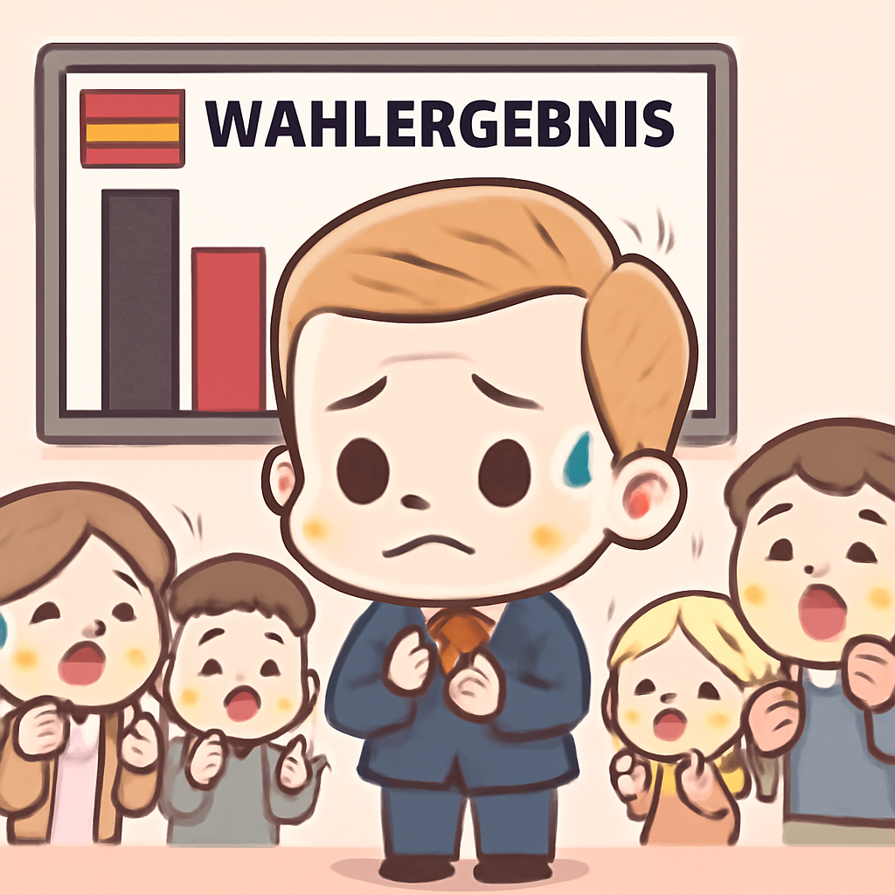

其一 · 俄羅斯莫斯科 · 烏克蘭大規模無人機攻擊
烏克蘭對莫斯科發動大規模無人機攻擊。
在俄羅斯莫斯科，烏克蘭於選舉期間發動了大規模無人機攻擊，報導指出約450架無人機被擊落，造成兩人死亡。此事件不僅影響了當地的安全局勢，還可能改變國際社會對俄烏衝突的看法，真是讓人感到戰爭的陰霾無處不在。
🔗 原始新聞 ↗
2026-09-21 · 以古觀今，以笑抗愁
烏克蘭對莫斯科發動大規模無人機攻擊。
在俄羅斯莫斯科，烏克蘭於選舉期間發動了大規模無人機攻擊，報導指出約450架無人機被擊落，造成兩人死亡。此事件不僅影響了當地的安全局勢，還可能改變國際社會對俄烏衝突的看法，真是讓人感到戰爭的陰霾無處不在。
🔗 原始新聞 ↗
德國中右翼政黨在選舉中遭受重大損失。

德國柏林，德國總理梅茲在最新的州選舉中，面對中右翼基督教民主聯盟黨的重大失利，稱這是「災難」。這不僅可能影響他個人的政治地位，還可能讓德國的政治格局產生變化，讓人不禁想，政治的風雲變幻真是如過山車一般刺激。
🔗 原始新聞 ↗
胡希派朝利雅德發射彈道導彈，沙國攔截。
在沙烏地阿拉伯利雅德，胡希派報導稱他們向首都發射了彈道導彈，造成機場燃料庫受到影響。沙國軍方表示已成功攔截此導彈，顯示出中東地區的緊張局勢依然高漲，讓人不禁思考，何時才能迎來和平的曙光？
🔗 原始新聞 ↗
加拿大和法國領導人會談未來合作。
在位於加拿大的聖皮埃爾，總理卡尼與法國總統馬克宏會談，探討加拿大全國成為歐盟的首個「準會員」的可能性。這不僅是兩國關係的升級，也可能改變北美和歐洲的經濟合作模式，讓人期待未來的「聯盟」會有怎樣的新變化！
🔗 原始新聞 ↗
以色列總統赦免因殺人被判刑的前士兵。
在以色列耶路撒冷，總統赦免了因殺害一名受傷巴勒斯坦人的前士兵，引發國內外的激烈討論。此事件涉及軍事行為的道德和正當性，讓人反思當局是否在背後推動更大的社會分歧，真是讓人感到一場沒有硝煙的戰爭正在上演！
🔗 原始新聞 ↗